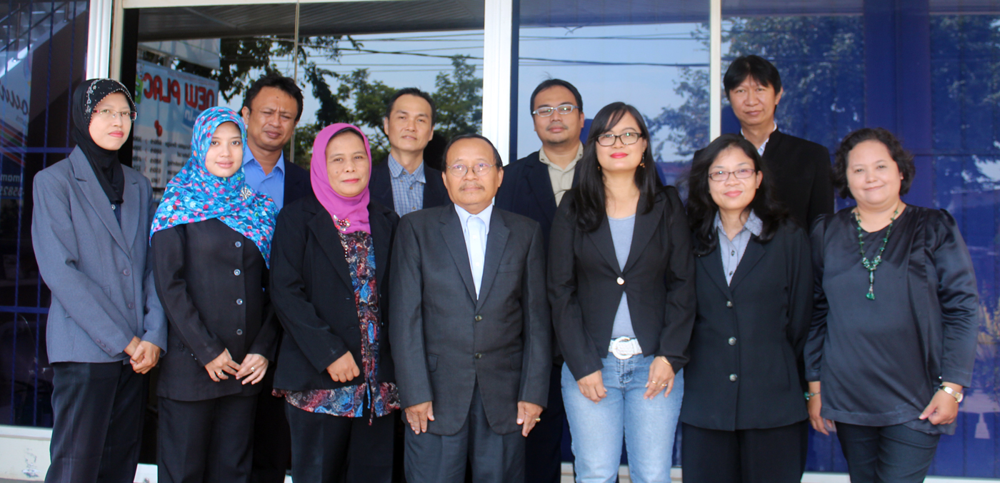

SISTEM INFORMASI S1
Fakultas Ilmu Komputer menawarkan kepada Anda kesempatan untuk meraih karir di bidang teknologi yang terus berkembang dan mempunyai masa depan yang cerah. Universitas AKI dijadikan panutan dalam pengembangan serta penerapan ilmu pengetahuan berbasis Teknologi Informasi, maka sangatlah tepat Anda menetapkan masa depan dibidang ini. My job is not to be easy on people. My job is to make them better. -Steve jobs Visi Fakultas Ilmu Komputer Menjadi fakultas yang unggul melalui penguasaan teknologi informasi dan bisnis sehingga memiliki daya saing dalam lingkup nasional dengan didasarkan atas keimanan pada Tuhan Yang Maha Esa. Misi Fakultas Ilmu Komputer 1. Menciptakan dan meningkatkan mutu pendidikan dan pengajaran fakultas untuk berkinerja secara efisien dan efektif. 2. Membangun kualitas sumber daya internal sebagai pelaku utama dalam implementasi ilmu pengetahuan berbasis teknologi dan bisnis. 3. Menerapkan dan mendayagunakan ilmu pengetahuan berbasis teknologi dan bisnis sesuai kebutuhan masyarakat. Tujuan Fakultas Ilmu Komputer Berdasarkan visi dan misi yang telah ditentukan maka Fakultas Ilmu Komputer memiliki tujuan untuk: 1. Menghasilkan lulusan yang beretika dan berkualitas dalam mengisi lapangan kerja dalam lingkup nasional. 2. Menghasilkan luaran penelitian yang bermutu dan berdaya saing nasional. 3. Menghasilkan luaran pengabdian yang bermutu sebagai upaya memberikan sumbangsih kemajuan masyarakat dan bangsa. PROGRAM STUDI Sistem Informasi S1 (SI) Jurusan ini menekankan pada penerapan solusi berbasis teknologi informasi dalam proses bisnis untuk memenuhi kebutuhan informasi bisnis secara efektif dan efisien.  Visi Prodi Sistem Informasi S1 Program Studi Sistem Informasi pada tahun 2024 menjadi program studi unggulan yang mampu menghasilkan lulusan berdaya saing nasional, tanggap terhadap perkembangan teknologi informasi, berkemampuan problem solver, berjiwa wirausaha, dan bertakwa kepada Tuhan Yang Maha Esa. Misi Prodi Sistem Informasi S1 Program studi Sistem Informasi pada dasarnya adalah melaksanakan tri dharma perguruan tinggi yang searah dengan misi Universitas AKI dan Fakultas Ilmu Komputer melalui: 1. Meningkatkan mutu pendidikan untuk menghasilkan lulusan berkemampuan akademik dan profesional yang unggul dalam bidang sistem informasi berbasis teknologi dan bisnis, beriman dan bertakwa kepada Tuhan Yang Maha Esa, bermoral Pancasila dan berbudi luhur. 2. Mengembangkan ilmu pengetahuan berbasis teknologi dan bisnis dalam bidang sistem informasi. 3. Menerapkan dan menyebarluaskan ilmu pengetahuan berbasis teknologi dan bisnis dalam bidang sistem informasi sesuai dengan kebutuhan dan perkembangan masyarakat. Tujuan Prodi Sistem Informasi S1 Berdasarkan visi dan misi yang telah ditentukan maka Prodi S1 Sistem Informasi memiliki tujuan untuk: 1. Menghasilkan lulusan berkemampuan akademik dan profesional yang unggul dalam bidang sistem informasi berbasis teknologi dan bisnis, beriman dan bertakwa kepada Tuhan Yang Maha Esa, bermoral Pancasila dan berbudi luhur. 2. Menghasilkan luaran penelitian berbasis teknologi dan bisnis dalam bidang sistem informasi. 3. Menghasilkan luaran penelitian berbasis teknologi dan bisnis dalam bidang sistem informasi yang diterapkan dan disebarluaskan sesuai kebutuhan masyarakat. STAF PENGAJAR Prodi Sistem Informasi S1 Sinta Tridian Galih, S.T., M.Kom. Yusup, S.Si., M.Kom. Sri Murjani Listijo, M.Kom. Suprapto, S.E., M.Kom. Suwarno, S.Si., M.Kom. Victorio Sukamto, M.Kom. Yohana Tri Widayati, S.E., M.Kom. Konsentrasi - Sistem Enterprise - Audit Sistem Informasi Prospek Lulusan Saat ini lulusan Fakultas Ilmu Komputer Universitas AKI sudah bekerja diberbagai instansi pemerintah, perusahaan swasta dan dengan profesi seperti : Computer Engineer, Control Engineer, Network Administrator, System engineer, tenaga Pengajar, Entrepeneur dan lain lain.